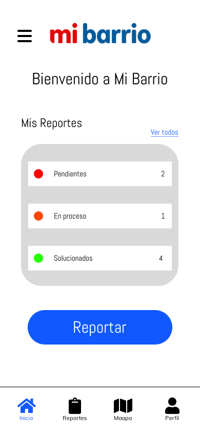

La aplicación que conecta a los vecinos con el municipio. Reportá problemas, hacé el seguimiento en tiempo real y organizá las soluciones para tu localidad en cuestión de segundos.

Historial de reportes con actualizaciones en tiempo real del estado de tus solicitudes.
Visualiza el mapa de tu localidad para ubicar rápidamente la zona exacta del problema.
Un apartado privado y seguro para gestionar tus notificaciones, historial y datos personales.
Adjuntá fotos, descripción detallada, categoría y antigüedad para agilizar la respuesta.
¿Tenés alguna idea para mejorar la app o encontraste algún error? Escribinos, leemos todos los mensajes.